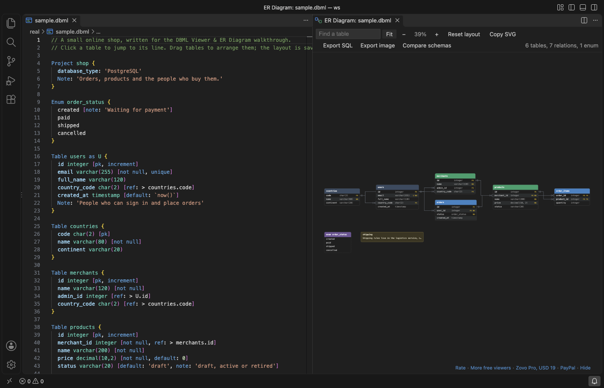

Open files in VS Code and Cursor / Docs and diagrams
Draw an ER diagram from a DBML or Prisma file in VS Code
DBML Viewer & ER Diagram draws the ER diagram of a .dbml file beside the editor and redraws it as you type. The same button works on a Prisma schema and on a .sql file with CREATE TABLE statements. Tables show their columns, types and key markers, with crow's foot lines between them. The diagram, search, drag to arrange and Copy SVG are free. Zovo Pro (USD 19 once) adds PNG, PDF and data dictionary export, SQL export and a schema diff, with 3 free tries each.
Free, MIT license. Extension ID zovo.zovo-dbml-viewer, version 0.1.1. Needs VS Code 1.90.0 or newer.

Steps in VS Code
- Install DBML Viewer from the Marketplace, or press Ctrl+P (Cmd+P on macOS) and run
ext install zovo.zovo-dbml-viewer. - Open a
.dbmlor.prismafile. A.sqlfile works too when it creates tables. - Click the diagram button in the editor title bar, or run "DBML Viewer: Open ER Diagram" from the Command Palette. The diagram opens beside the file.
- Edit the schema. The diagram redraws as you type. Lines that cannot be read are listed under the toolbar with a link to each line.
- Type a name in Find a table to jump to it. Drag tables to arrange them. The positions are kept for each file, and Reset layout starts over.
- Click a table or a column to jump to its line in the editor. Click Copy SVG to put the diagram on the clipboard for a README or a pull request.
Where Zovo Pro saves time
The live diagram for DBML, SQL and Prisma, the layout, search, zoom, Copy SVG and the DBML language support (colors, problems, outline, go to definition) are free, with no limit. It needs no sign-in and makes no network calls.
For a design document or a wiki, this tool saves the diagram as a 2x PNG, an SVG file or a vector PDF. It can also write a Markdown data dictionary with the column, type, keys, nullable, default and note of every table. The other two Pro tools write CREATE TABLE scripts for PostgreSQL, MySQL, SQL Server or SQLite (or turn SQL into DBML), and compare two schemas with the migration SQL.
With Export the diagram as PNG, SVG, PDF or data dictionary (Zovo Pro)
- Open the diagram, then click Export image in its toolbar, or run "DBML Viewer: Export the diagram as PNG, SVG, PDF or data dictionary (Pro)".
- Pick PNG, SVG, PDF or the data dictionary, then pick where to save.
- Escape or Cancel uses no free try.
Export the diagram as PNG, SVG, PDF or data dictionary works 3 times on your computer before it asks for a license, and a try counts only when you get a result. Opening a file shows no popup and no countdown.
Zovo Pro costs USD 19 once. It is not a subscription, and it turns on the Pro tools in every Zovo extension, not only DBML Viewer. After a card payment (Stripe) your license key shows on the next page. In VS Code, run "Zovo Pro: Enter Zovo Pro license key" from the Command Palette and paste it. The key is checked on your computer, with no network call. With GitHub Sponsors, pick the "$19 one time" tier, then run "Zovo Pro: I already paid: unlock with GitHub Sponsors" and sign in with the same GitHub account. With PayPal, send USD 19 with "Zovo Pro" in the note and the key comes by email within a day.
A team of 5: USD 59 once, by card or by PayPal. Every rule and every Pro tool is on the Zovo Pro page.
Steps in Cursor, Windsurf or VSCodium
- Open the Extensions view with Ctrl+Shift+X (Cmd+Shift+X on macOS).
- Search for
zovo.zovo-dbml-viewerand click Install. Cursor, Windsurf and VSCodium install from Open VSX, where it is published aszovo/zovo-dbml-viewer. - If your editor has no gallery, download the .vsix from the Open VSX page and run "Extensions: Install from VSIX...".
- Then use it the same way as in VS Code.
What DBML Viewer handles
- DBML with tables, enums,
Refin short and long form,TableGroup,TablePartial, sticky notes and header colors. - Prisma models with
@id,@unique,@@index,@relationand enums. - SQL files for PostgreSQL, MySQL, SQL Server and SQLite with
CREATE TABLE,ALTER TABLE ... ADD FOREIGN KEYandCREATE TYPE ... AS ENUM. - Schemas with 200 tables or more, laid out as a grid ordered by relation.
What it does not do
- It reads schema files, not a live database. It does not connect to PostgreSQL or MySQL.
- Files up to 8 million characters are read.
- In SQL files,
INSERT, views and functions are skipped. In Prisma files, view and type blocks are skipped. - Prisma relation fields are drawn as lines, not as columns.
Other options
- dbdiagram.io. The web app by Holistics, the makers of DBML. You paste the schema into a website.
- @dbml/cli. A free command-line tool that turns DBML into SQL and SQL into DBML. It draws no diagram.
- prisma-erd-generator. A free Prisma generator that writes an ER diagram image when you run prisma generate.
Install counts and Open VSX status were checked on 12 November 2026. Descriptions in quotes are the extensions' own.
Questions
Does it work with a Prisma schema?
Yes. Open schema.prisma and click the diagram button in the editor title bar. Models, enums and @relation lines are drawn.
Can it draw the diagram of a live database?
No. It reads schema files. For a running PostgreSQL or MySQL database, export the schema to a .sql file first, or use a database client.
Is my schema sent anywhere?
No. The file is read on your computer and the extension makes no network calls.
Does it work in Cursor or Windsurf?
Yes. Cursor, Windsurf and VSCodium install extensions from Open VSX. Search for the extension in their Extensions view and install it there.
More about DBML Viewer
Read the DBML Viewer page for every feature and setting, or the source code on GitHub.
Related guides
- Export an ER diagram as PNG or PDF from VS Code
- Compare two schema files and write the migration SQL
- Preview a reStructuredText (.rst) file in VS Code
- Read an RTF file in VS Code
Zovo Pro and support
Zovo Pro: USD 19 once, every Zovo viewer. It turns on the Pro tools in this extension and in the other Zovo extensions you use. The free features stay free.
After a card payment your license key shows on the next page. Paste it with the command "Zovo Pro: Enter a key".
You can also support the work with no Pro:
Need your format supported?
Open a format request with a sample file, and I reply there whether it can be done. For USD 299 once, through this GitHub Sponsors tier, I add your file format or a missing feature to this extension, with tests, within 7 days.